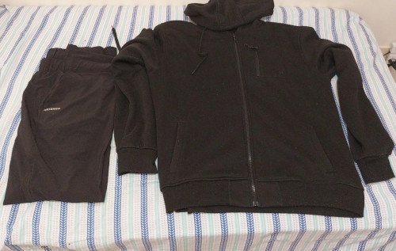
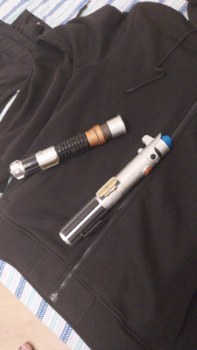

Pre-production
Published in 14/06/2024
We began to make the first steps, and at that point, all we needded was a scenario and costumes. Our idea was using Kael's Grandmother's house as a scenario, and after, we thought about the school as it. Colégio Católica has a grove that we thought might be interesting to record the scenes.
To the costumes, we searched for white and black clothes in our own closet. White would represent: Obi Wan Kenobi, starring by Pedro Giacciani (me), and black: Anakin Skywalker, with Kael's performance
 . Kael's costume, made by his own clothes